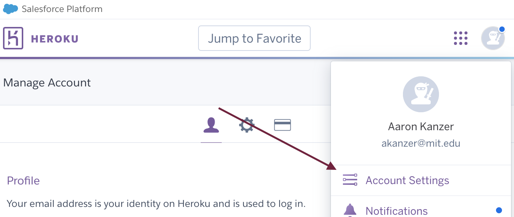
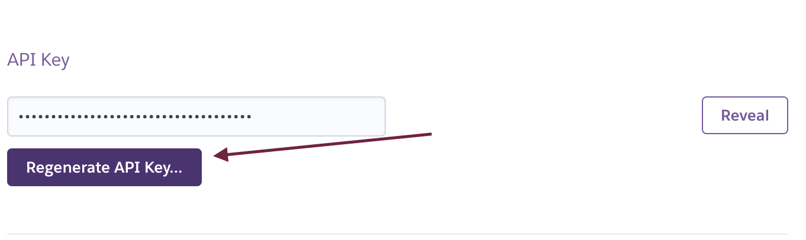
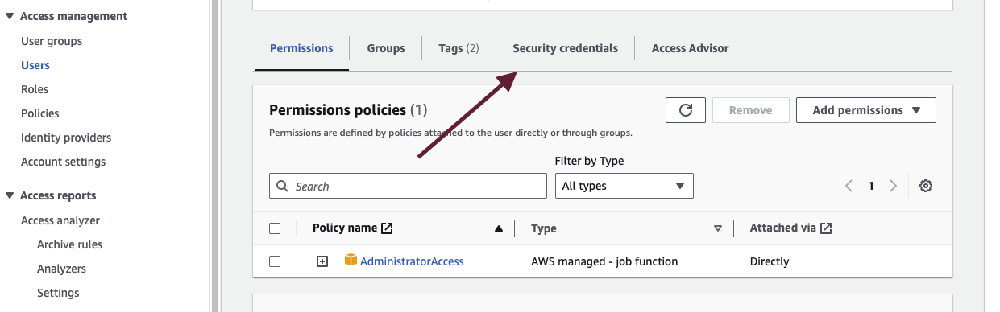
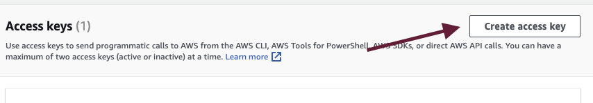
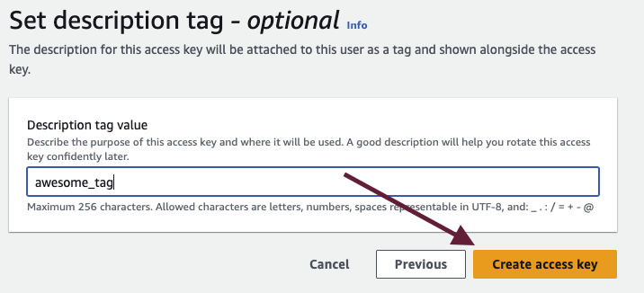
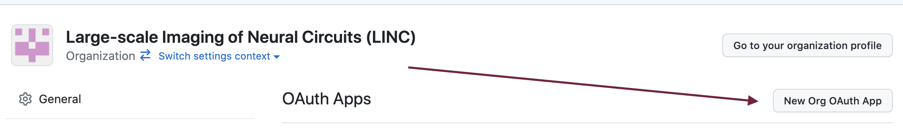
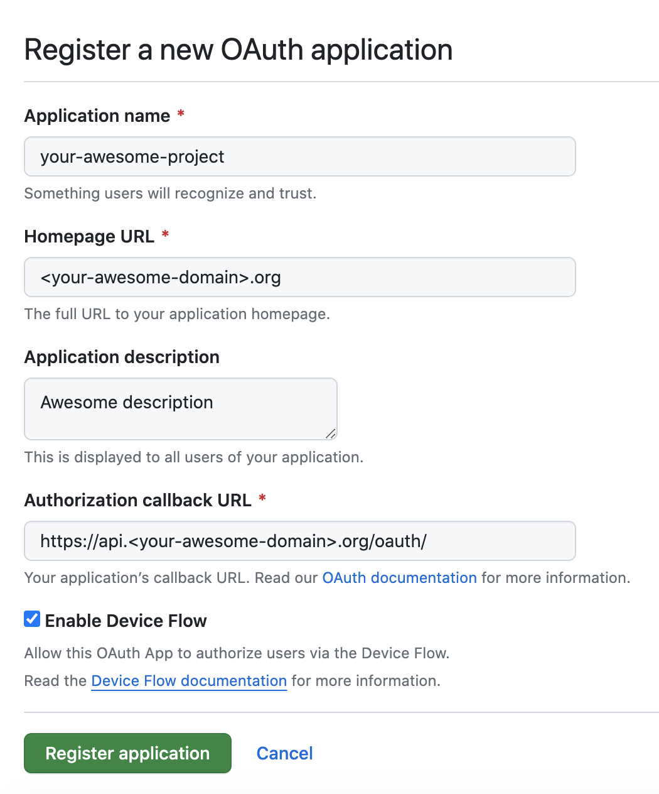
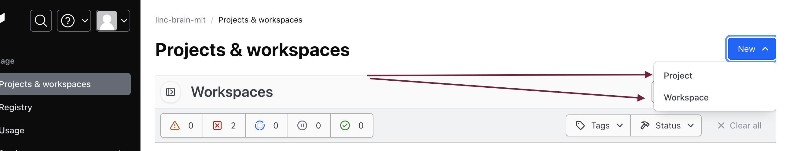
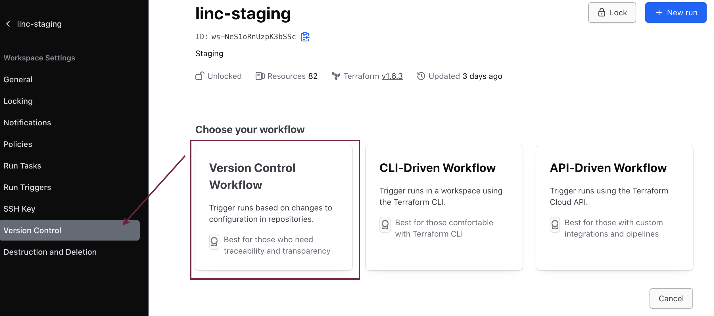
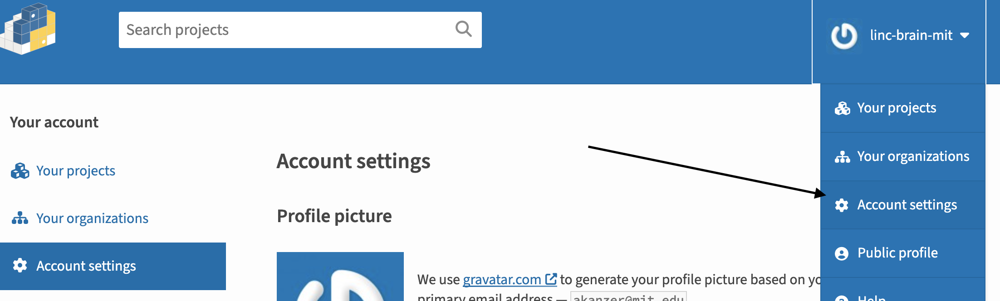

Initialization
LINC Brain relies on a handful of vendor services to operate:
The following accounts must be made to create LINC Brain in a production setting:
• Heroku
• AWS
• GitHub
• Terraform Cloud
• Netlify
• Sentry
• PyPI
• Datalad (TBD)
• git-annex (TBD)
Heroku¶
Create your own Heroku account¶
No special steps here, just create!
Create a "Team"¶
Send invites to the appropriate e-mail addresses to onboard your team
Create an "App"¶

You can name whatever you wish -- no need to add a pipeline, etc. Be sure to note the app name

Your app will be an empty template, but that is OK -- more to come here!
Obtain Heroku API Key¶
You'll need to provide access to Heroku for GitHub, Terraform, etc. -- thus, you'll need to generate an API Key
First go to your Account Settings:

Next, find the API Key section and generate a new key.

Keep this value for further steps.
AWS¶
Create your organization's AWS account¶
No special steps here, just create!
Create an IAM User Group with AdministratorAccess¶

Ensure that you click the right policy in the Attach permissions policies section.

Note: If you know more refined permissions to give the IAM Group, that is preferred, as those with access
to the credentials of AdministratorAccess in AWS can be an extreme security hazard if not managed appropriately

Create an IAM user that lives in the User Group you made¶

Next, give a unique name -- no need to enable Console Access

Lastly, add them to the Group you made in the step above:

Create security credentials¶
You'll need to create Security Credentials for your User -- these credentials will be specifically used
in your Terraform Cloud setup
Firstly, go to your User and click the Security Credentials tab:

Navigate to Create access key

You'll be prompted to provide a reason for the access key creation. It doesn't matter much, so Other is a completely acceptable choice

Time to create the key!

You'll be provided with the values of your Access key and Secret access key -- store these values somewhere secure and accessible

GitHub¶
You'll need to create a GitHub Organization with your DANDI fork. See here for documentation to create a GitHub organization
Initialize your OAuth App¶
Once you create the Organization, navigate to the Settings tab:

Under Settings, you'll want to initialize an OAuth App -- navigate to Developer settings > OAuth Apps

Click on New Org OAuth App next

You'll be prompted with the following form -- see the example values populated in this screenshot -- more to come in other sections for where these values might be populated:

Obtaining your OAuth App Credentials¶
After creating your OAuth App, you'll lastly want to obtain a client secret key and your client ID -- make sure to note these values for further steps when creating our API

Connecting GitHub with Heroku¶
This step is contingent that you have forked dandi-archive
Once you have the repository forked, you'll want to navigate to Settings in the repository page:

Next, navigate to Security > Secrets and variables > Actions

And then lastly create two new secrets, HEROKU_EMAIL should be the email address/account you used to generate your HEROKU_API_KEY

Terraform Cloud¶
Terraform is configuration tool for managing "infrastructure-as-code" -- meaning that we can programatically manage infrastructure in a traceable, version-controlled form.
The Terraform ecosystem provides a UI tool called Terraform Cloud
Start by visiting https://app.terraform.io/ and making an account.
Creating a Terraform Project and Workspace¶
Once you have successfully made an account, you'll want to create a Workspace and a Project in that Workspace

Populate Environment Variables¶
After successful creation, you'll want to populate the following variables in the Variables section of the Workspace:
You'll need to populate AWS_ACCESS_KEY_ID, AWS_SECRET_ACCESS_KEY, HEROKU_API_KEY and HEROKU_EMAIL

Link GitHub Repository¶
Next, link your appropriate GitHub repository, in this case, most likely your fork of dandi-infrastructure.

Link your repository -- you may need to declare the appropriate subdirectory

You can now invoke Terraform plan and apply from the Terraform Cloud UI or via your GitHub repository Actions.
Netlify¶
The frontend for dandi-archive is served via Netlify
Create Account and Initialize Project¶
First, create an account. After creating an account, you'll want to navigate to Sites, where you can Add a new site, and then Import an existing project

You'll want to next connect linc-archive via Deploy with GitHub. Enable Netlify to be authorized as a GitHub app. Once you have
enabled authorization, you'll need to specifically link your appropriate repositories:

Now once you see the appropriate repository, you'll want to navigate to configure where Netlify can find and build your site

For usage of Netlify, one could refer to declaring a netlify.toml configuration file like the one referenced in DANDI Archive
These values can also be replicated in the settings.

Your frontend should be able to deploy to a auto-generated URL via Netlify now! Steps for domain management and configuration are described further in the Frontend Deployment section of these docs.
Sentry¶
Sentry is a monitoring tool used for the DANDI Archive API. It is integral in order to notify engineers if a system is down, experiencing poor performance, or may have unwanted users
Begin by creating a Sentry account -- once successful, you'll start by creating a new Project:

Select Django as an App Type¶
DANDI Archive API is built as a Django app -- so proceed to select Django on the following screen:

Capture Sentry DSN value¶
You'll be provided with a screen displaying how to initialize and install Sentry into your Django app. For now, just capture the DSN value. This value will be used later as an environment variables while deploying your API via Terraform

PyPI¶
A common way that users interact with the DANDI ecosystem is via its CLI and Python client tool: dandi-cli
Create a PyPI Account¶
Versions of this tool are hosted, versioned and managed by PyPI -- therefore, you will need to create an account.
Retrieve an API Token¶
After creating an account, you'll want to create your own API key -- first go to Account settings

Scroll down to API tokens and create a value -- keep track of this value for now. We will use it later

In terms of creating and publishing your first project, go to the documentation for setting up a CLI and Python Client